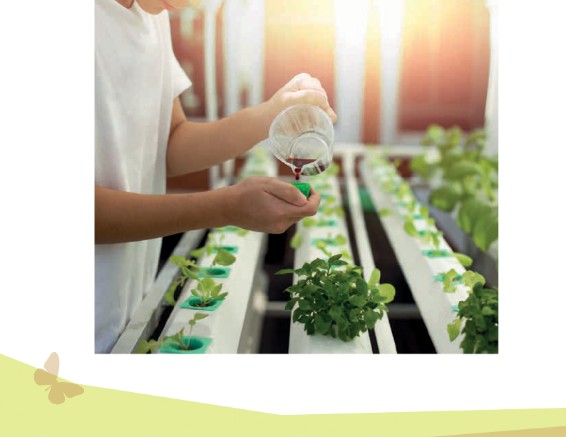

利用設施栽培除可避免因氣候不良引起作物受害、保護作物正常生長、改善品質、提高產量的目的外，還可以減輕或避免病蟲草害的侵襲，以及鳥類和野生動物入侵危害。此外，設施可調節溫度與濕度，適用於需要控制溫度或濕度的農作物生產。然而設施亦有其缺點，如成本高，為封閉系統，土壤鹽分易累積而影響作物生長；易積熱且通風較差，較容易引發生理障礙；光照強度
受限，影響作物生長，同時可輪作的作物種類受限；此外，設施內往往濕度較高，易引發病害，而發生蟲害時，因寄主密集栽培易嚴重擴散。如何應用設施栽培生產安全的優質農產品，克服其缺點為設施栽培極其重要的課題，其中又以害物防除最為棘手，因此，設施栽培之害物整合管理常為討論的重點，而在討論害物整管理之前須先瞭解害物的定義及常用的防治技術。

第一節 害物種類及生態
所謂害物， 是指「對植物或植物產品有害之任何植物、動物或病原體之種 (species)、品系 (strain)、生理小種或生物型 (biotype)」，而以整體生態而言，影響植物生長的因子包括生物性因子與非生物因子。
一、生物性因子
一般所稱的生物性害物，危害作物或與作物生存競爭致使作物異常生長的生物因子包括動物、雜草、蟲害與蟎害、病害、蘚苔植物與藻類。
（一） 動物
作物受害時會在植體上出現咬痕、破壞狀或行徑，有一定軌跡可循，較為常見者為脊椎動物如鳥類與鼠類，軟體動物如蝸生、扁蝸牛、蛞蝓及福壽螺等。
（二） 雜草
雜草可由三面向定義：1. 凡是生長於土地上而非人類所期望的植物；2. 尚未被發覺其特殊用途而經濟化栽培的植物；3.在特定時空中，對人類有害的植物，如危害農作物生產、環境品質、景觀者，亦即
園區出現非栽種的作物，均可視為雜草。雜草依型態分類一般可分為三類：1. 雙子葉雜草，為濶葉草；2. 禾本科雜草，為尖葉草；3. 莎草科雜草，為莎草。
（三） 蟲害與蟎害
蟲害發生時， 可在作物體上發現蟲體、蟲卵、蟲糞、食痕及蟲癭。昆蟲依口器不同可分為刺吸型口器及咀嚼型口器，分別產生不同的食痕，可作為診斷之依據。設施內因受防蟲網等設施阻隔，較易發生的害蟲多為小型昆蟲，如蚜蟲、粉蝨、薊馬、斑潛蠅、蕈蠅等。害蟎包括葉蟎及細蟎，刺吸植物組織形成白色細小褪色斑，或造成葉片畸型、捲曲。昆蟲與蟎類危害時，危害狀在園區中零星發生，並由單點發生後向周圍不規則擴散。
（四） 病害
引起植物病害的病原菌主要為真菌、細菌、植物菌質體、病毒及線蟲。植株被害時會產生病狀及病徵，病徵出現後不會復原，病徵處可檢測到病原菌，具傳染性，病徵在植株上呈不均勻分布，由一點或數點開始發生，並可由發生點開始向其周圍快速或緩慢的擴散。大部分作物病害均可能於設施內大發生，其中最為常見者為白粉病、灰黴病、細菌性斑點病及根瘤
線蟲等。
（五） 蘚苔植物
蘚苔植物是具分枝、呈帶狀的植物，缺乏獨特的根系、莖和葉片，行營養繁殖。直立、傘狀結構可釋放孢子繁殖。在植物表面的杯狀結構中產生的小芽狀分枝，有助於在灌溉過程中經由水滴協助散播。在肥力、水分和濕度高的條件下有利於蘚苔植物成長。
（六） 藻類
藻類是缺乏真正根系的原始植物，莖、葉含有葉綠素，可行光合作用。由於設施提供藻類理想的生長環境，可在走道、植床下、盆缽或栽培介質上生長，與栽培作物競爭養分，並在介質表面形成一層不透水層，影響水分滲透，對於多數栽培者來說，均是極為困擾的問題。藻類也是蠅類和蕈蠅類的食物來源，對生長緩慢的植物影響較大。若藻類在走道上過度生長對工作人員也可能是安全隱患。設施披膜上的藻類生長也會降低設施的光照強度。

二、非感染性害物
非感染性害物是由人為管理不當及環境因素不適而造成植物不正常生長，發生時在植體上會出現症狀，但無明顯生物體，發生時均勻分布，大面積同時或特殊部位發生，不具感染性、不會擴散，通常可以藉由改變環境條件而預防，或於不利因素消失時可回復正常生長，但作物受害後，往往影響當季的農產品品質，產量可能會降低，甚至引發感染性病害。
（一） 環境劇變引起的生理性傷害
氣候因素造成溫度、濕度劇變， 天然災害颱風、水患等造成瞬間傷害，或是藥劑使用不當、施肥不當以及水、空氣污染或公害等造成植物的傷害，於短時間發生，且強度超過正常植株之忍受範圍，當不利環境消失時，可逐漸恢復正常。
（二） 農業生態環境引起之生理症
土壤之酸鹼 (pH) 值、水分、通氣性、堅實度等，高溫、低溫、水分失調、光照失調等環境因子亦間接造成生理障礙，設施中普遍發生者為日燒與高溫障礙。
（三） 生理障礙
生理障礙為植株之營養失調，主要為營養缺乏與營養過多。當植物的必要元素缺乏時，生長會受限制，甚至組織受破壞而出現症狀，病原菌較易入侵而罹病；反之，若施用的元素遠多於植物需求量，植物亦無法吸收而出現毒害現象，進而引發病蟲害。不同的營養失調會呈現不同的症狀，但在不同作物上之症狀一般極為相近。
（四） 連作障礙
同一田區或栽培介質經長期、連續種植，或長期種植同一作物，在正常管理的情況下，產生產量降低、品質變劣、生育狀況變差的現象，可通稱為連作障礙。連作障礙主要原因為土壤有害微生物增加導致土壤傳播性病害加重、土壤鹽基化、酸化或板結、植物產生自毒作用、營養元素不均衡等。

第二節 害物防除技術
當害物 (病蟲草等) 發生時，為避免作物受干擾而影響品質或產量時，往往必須加以防治，「防」為預防，是在害物入侵前的管理措施，讓害物不會發生或輕微發生；「治」為治療，是害物入侵後的管理措施，使害物族群降低至不會危害作物或減少因害物發生的損失。不論預防或治療，目標均是將害物趕盡殺絕，以減少作物的損失。常用的防治技術極多，包括檢疫與隔離、耕作防治、物理防治、抗性育種、強化作物抗性、交互保護與誘導抗病性、生物防治與藥劑防治。
一、檢疫與隔離 (quarantine and isolation)
主要目的是杜絕害物由境外移入。為
阻止害物 (病、蟲、草) 由發生地區傳播至另一未發生之新地區，在國際間採檢疫措施之法規防治，栽種地轉移時則採隔離措施。常用的方法為：（一）加強檢疫：避免由國外引進害物；（二）產地檢疫；
（三）隔離栽培：未確定作物為健康植株時，採隔離栽培；（四）選用健康種苗及不帶害物種子；（五）種苗檢查：以生化技術檢測種子、種苗、部分植體、砧木及
接穗之帶菌情形；（六）預防引進種子時夾帶雜草種子。
二、耕作防治 (cultural control)
利用和改進耕作栽培技術， 控制病蟲害的發生、發展，以避免作物遭受生物及非生物危害的方法。常用的方法包括：
（一）輪作或間作：降低連作障礙發生；
（二）合理之栽種管理：適地適種、選擇和使用當地適應或抗蟲害的植物種類或品種及改變種植時間等；（三）灌溉與水分管理 (irrigation)：調整灌溉的頻率和數量；（四）肥料之選擇及施用：適當調整肥料管理措施，減少耕作壓力；（五）田間衛生：採用人工和機械直接去除病害組織以減少感染源，清除受昆蟲危害植株以降低昆蟲族群密度，拔除雜草降低密度等；（六）陷阱植物；（七）覆蓋植物；（八）忌避植物；（九）拮抗植物；
（十）指示作物。

三、物理防治 (physical and mechanical control)
物理防治是改變作物的環境，再根據
有害生物對物理因素的反應規律，利用物理措施、器械設備等干擾、減輕、避免或防治病蟲害。常用的方法包括：（一）環境管控：溫濕度、光照與通風；（二）套袋：阻隔害物入侵；（三）敷蓋與覆蓋；
（四）設施栽培；（五）黃、藍色黏紙；
（六）油劑；（七）溫度處理：利用低溫冷凍與高溫消毒技術，降低害物發生；
（八）安裝濾網或阻隔板；（九）燈光誘集；（十）人工捕殺；以及（十一）器械耕除。
四、生物防治 (biological control)
以生物為工具，利用生態系統中各種生物之間相互依存、相互制約的生態學現象及生物學特性，以達到防治作物病蟲草害的目的。利用生物抑制或消滅有害生物，不污染環境，不影響人類健康，是較安全的害物防治方法。目前廣泛使用的生物防治技術包括天敵與生物農藥。天敵有二大類，捕食性天敵如基徵草蛉、小黑花椿象、烟盲椿、瓢蟲等，寄生性天敵如寄生蜂、平腹小蜂等。生物農藥三種：天然素材為植物源農藥，如苦楝油、除蟲菊等；生化製劑農藥為動物源農藥，即一般
常用之性費洛蒙誘引劑；微生物製劑，蘇力菌、核多角病毒、液化澱粉芽孢桿菌、木黴菌及枯草桿菌等。
五、化學防治 (chemical control)
化學防治即為藥劑防治，利用農藥殺滅或抑制害蟲的生長和擴散。所謂農藥是指用於保護農林作物免受病蟲草鼠及其他生物危害的化學品。農藥依防除對象可分為殺蟲劑、殺真菌劑 (fungicides)、殺細菌劑 (bactericides)、除草劑 (herbicides)、殺蟎劑 (miticides)、殺鼠劑 (rodenticides)、植物生長調節劑 (plant growth regulators) 及殺線蟲劑 (nematocides)。依移行性可分為系統性、滲透性與非移行性 (接觸性)。施用的方法至少十種以上，分別為噴霧法、粒劑施用法、種子處理法、土壤處理法、毒餌法薰蒸法、噴粉法、煙霧法、塗抹法、以及注射法，其中噴霧法廣為種植者所愛用。
第三節 害之物定整義合與管原理則 (integrated pest management, IPM)
設施作物生產者承受著越來越大的壓力，要求減少使用化學農藥，而減少農藥使用和提高作物品質的最簡單方法為制定和實施害物整合管理 (IPM) 策略。
在制定IPM計畫之前，須先瞭解IPM的定義與基本原則。IPM採用多種病蟲草害防治技術，整合而成一管理策略，用以避免或防止病蟲草等造成損害，並儘量減少對人類健康、環境和非目標生物體的風險。IPM著重於預防措施，預先採取措施避免害物發生，而不是僅在危害發生後嘗試降低其危害而減少損失。IPM是一種系統化、資訊密集型的方法，有賴於對植物正常生長、害物的生物學和生態學以及如何影響生產系統的基本瞭解，因此，在正確實施IPM策略之前，必須評估所有可用的防治技術。
簡而言之，IPM結合相容和有效的管理技術，並將植物保護產品的應用納入害物管理策略中，協助生產者有效防除害蟲、病害及雜草等害物，同時確保生產高品質的農產品。成功的設施栽培的IPM策略必須是可持續性、高經濟效益的管理策略，同時提供零售商和消費者高品質的農
產品。除了成本效益外，IPM策略還應減少對環境的影響，生物密集型IPM特別強調生物防治技術的應用，藉以取代化學防治，以減少化學農藥對環境的衝擊，以建立永續經營的農業。
IPM作業流程：
一、害物診斷與鑑定
收集並保存種植區域之主要與次要害物種類、生活史、生理與生態特徵、傳播途徑、寄主範圍、天敵等資料，當不正常現象發生時，立即進行診斷，確定害物種類，必要時尋求專家協助。
二、預防
採取預防措施，降低害物發生率，主要為耕作防治與物理防治技術，如選擇種植地點、作物品種、種植或輪作時間、水分與養分供應、農場衛生、套袋、作物管理等。
三、監測與評估
利用性費洛蒙、黃藍色黏紙、目視觀察、計數等方法，建立害物監測模式，定期監測害物發生率，據以建立防治界線 (ET) 與經濟危害水平 (EIL)，作為採取管理措施之參考。此外，作物之生長勢與環境因子同為影響害物發生與嚴重度之關鍵因子，亦須加強監測，並評估其影響。為便於監測，建立田間管理作業流程表與查檢表，事先訂定監測點，可使管理作業易於執行。
四、治療
經由監測結果已知預防措施無法抑制害物發生與擴散時，則須採取治療措施，可用之防治技術為機械防治、生物防治、化學防治等。發生狀況超過經濟危害水平時，則使用化學防治技術。
五、紀錄
所有操作流程宜詳實紀錄，作為下一期作改善之依據。
六、檢討與改善
每一期作結束後， 宜詳實檢驗監測紀錄，工作人員間互相傾聽意見與經驗，並經由討論與諮商，提出下一期作改善規劃。
第四節 設施栽培之害物整合管理策略制定方針
設施栽培仍須以農業生態體系整體的觀念出發，根據有害生物與環境之間的相互關係，充分發揮自然的因素，因地制宜、協調與應用必要的措施，將有害生物控制在不造成經濟損失之狀況下，以獲得最佳的經濟和社會效益。因此制定管理策略宜由生態、安全及經濟利益角度考量，同時考量保護環境、恢復和促進生態平衡、有利於自然控制，因此，設施並不排除使用化學農藥，但選擇高效、無毒或低毒、污染風險低及有選擇性的農藥，以發揮最佳藥效，同時將對人畜、環境及生態的影響降至最低。制定設施栽培之IPM時，宜考慮如下之重點：
一、瞭解設施內生物族群的組成結構與數
量，確定主要病蟲害、次要病蟲害以及天敵種類與數量。
二、分析影響病蟲害族群動態的自然控制
力量，特別是耕作制度、作物種植方式、
生態環境、病蟲害發生規律及族群數量變動等，藉以訂定防治適期。
三、研究各種病蟲害與寄主植物、天敵之
相關性、病蟲害為害與所造成損失的關係，結合防治成本、作物產值、經濟和社會因素，制定經濟界限，作為管理時機的參考。
四、研究各種防治措施的作用、協調選
用適當的防治措施，建置降低關鍵性病蟲
害發生概率的技術體系。選用之防治措施應符合經濟、安全、有效及簡易可行的原則，盡量降低成本投入、提高經濟效益。
五、研究病蟲害族群變動的相關環境因
子，發展可靠的監測技術，及時、準確預測病蟲害發生情況。
六、環境特殊性考量與因應措施
高溫、高濕及封閉系統引起之反效果 (鹽基、通風) 及天然災害之防患 (如設施受損與因應措施) 均為設施栽培不可忽略之考量要素。
七、設施栽培之IPM與作業流程
IPM的原則與施用技術均適用於設施栽培之害物管理，但因設施為一較封閉的栽培空間，更須加強相關之管理措施。不同地區、不同氣候環境、不同作物之管理模式須

機動調整，以取得最佳管理結果。
八、設施之隔離與封閉性
設施搭建後須隨時保持於封閉狀態，避免蟲害自縫隙進入設施內，並減少頻繁進出，避免夾帶害物進入設施內。入口及通風口之緊密性關係到害物侵入，應設置雙重門，並可於設施外種植相同作物作為指示作物，當指示作物出現受害狀時，再進入設施內詳細觀察，可避免頻繁開門而提供害物入侵的管道。一般均認為防蟲網孔目愈小防蟲效果愈佳，然防蟲網網目過小時，易造成通風不良、溫度高而不利作物生長，因此，依據種植作物易發生的蟲害種類選用合適的防蟲網，可達較佳防治效果。若防蟲網覆蓋不夠緊密或破損，會成為害蟲進入管道，宜加強管理。設施周圍保持3公尺以上的無雜草區域。可在設施外舖設抑草蓆防止雜草生長，並適時耕除以限制雜草種子傳播。亦可保留草生栽培區塊，混種或維持不同葉片堅硬、匍伏性的禾本科草種，可以有機會抑制非禾本科作物的害蟲繁殖，亦可能可避免傳播病毒病。為降低設施之地基部分因防蟲網未完全密實而出現缺口，或因土壤流失而提高害蟲進入設施之風險，可在設施周圍種植陷阱植物，阻止昆蟲進入設施。
九（一、）種清植除前藻之類管理措施
注重田間衛生，徹底清除藻類的營養來源，由於雜草及植物殘體均可作為藻類生長的營養來源，因此所有設施表面均須定期清洗，並保持於無植株殘體與雜草狀況，抑草蓆除可防止雜草外，亦可降低藻類滋生。加強排水設施，地面或畦溝盡量保持乾燥，避免長期積水可預防藻類滋生，必要時使用消毒劑或除藻劑防除。
（二） 清洗與消毒
每一期作種植前均需將設施徹底消毒，若為盆栽栽培或介質栽培，前一期作結束、下一期作種植前，需將所有植體、盆鉢及土壤或介質等材料全部清除，並將植床、地板清理乾淨後消毒，之後再放入清潔的栽培介質、盆鉢及植體，而整個流程最重要者，為必須確定所使用的資材為清潔不帶菌者。若以植槽離地栽培而難以將介移出處理時，清除所有作物殘株、資材廢棄物後，徹底清洗植槽表面、地板與相關設施後，如有必要經消毒後再於植槽中施放不足之栽培介質。
（三） 加強土壤管理
由於設施為一封閉系統，肥料施用不當易造成鹽基過高，宜加強檢測，同時採
用輪作、間作或混作，避免連作障礙。此外，存活於土壤中之害物若未徹底消除，可能於種植後嚴重大發生，故須於種植前滅除。可採用太陽能消毒，在休閒期將土壤翻犁、浸水後關閉設施，利用太陽能高溫消毒，除可消毒土壤、滅除病蟲草害及累積於土壤中之揮發性物質外，對空氣中之害物亦可發揮部分滅除效果。亦可採用土壤熱處理，如蒸氣消毒，但消毒後需要等待數星期後再種植，以便土壤中氣體揮發，同時重新建立有益的微生物族群。若採用藥劑消毒時，除須待藥劑氣體全部揮發後再種植，更可能因所有土壤微生物均被殺滅，必要時須於種植前適量添加合適的微生物製劑。
（四） 合理化肥培管理
收集栽種作物之土壤性質與營養需求資料，依作物需求選用適當土壤或栽培介質，並進行土壤或栽培介質物理、化學性質分析，必要時進行生物性分析。調整土壤或介質酸鹼值使適合作物生長，之後再選用合適肥料作為基肥，合理化的基肥需包括化學肥料與有機質肥料，同時避免選用受污染及含雜草種子的肥料。
（五） 環境管控
環境控制可營造為適合作物生長而排
除利於害物發生的條件，主要為濕度與溫度的控制。依照栽種作物需求，營造有利於作物生長而不利於害物發生條件，設置內循環扇可促進通風，微霧噴霧有利於高溫時降溫，低濕時增加濕度而降低蟲害發生，高濕季節，除濕機亦可用於降低濕度而減少病害發生。
（六） 妥善規劃種植區
避免將不同作物混植，同一設施宜種植單一作物，需於同一設施種植多種作物時，亦需分區種植，並由固定人員管理固定的設施或同一種作物，以避免病蟲害經由管理人員傳播。
（七） 妥善規劃種植計畫
播種或種植前預先擬定適宜的種植規劃。育苗時之播種期調整、播種密度、採用適當之育苗方法及苗床管理時間，宜擬定工作計畫，詳細評估不同批次生長狀況與批次間相互感染之風險；種植時則需選擇適當之種植時機、注意播種及種植深度、避免密植植物等。
（八） 工作動線規劃
規劃工作動線、管控工作流程，並固定單向的出口及入口，避免工作人員來回走動，可將人為與器械傳播之機率降至最低。

第五節 選用適合當地設施栽培之健康種子、種苗

成功的管理計畫須考慮品種的選擇，儘量選用適合當地設施栽培的品種，若具抗性或抗逆境的品種更佳，採用健康種子或種苗，避免將害物引入。若無法確定種子為健康種子時，經種子處理後再行播
種；種苗宜為經檢定之健康種苗，萬一種苗已目視發生病蟲害時，宜隔離至其他設施，經處理至無病蟲害發生時，再定植於設施中。

第六節 巡視、監測與診斷
監測是定期、系統地檢查作物和種植區，是將病蟲草害進入設施的風險降至最低的關鍵技術之一，有助於發現潛在的問題及嚴重性，可及早提出害物發生之預警，並預估有效防治時間，立即提供有效的管理措施，更可進一步累積有效防治的資訊，是有效的IPM策略的基礎。而監測與採樣工具依作物與害物種類而不同，選擇合適、可收集正確資料之工具極其重要。而在監測之前，擬定監測策略，加強訓練固定人員使其熟悉相關技術，以執行例行性的巡視及監測作業，避免人為誤差。此外，天敵及有益生物亦須監測。
一、危害界線與防治界線
害物造成的危害包括經濟層面與品質層面。經濟層面是因為害物密度足以造成經濟損失，即經濟損失大於防治成本；而品質層面常因為害物密度造成外表上不可被接受的損失，例如花瓣因薊馬危害而受傷所造成品質不佳等，亦可能造成口感不佳等問題。監測之前須先瞭解不同害物之危害狀態，估算可能造成損失，再設定防治界線。
二（一、）監監測測技點術設定
前一期作曾經發生之區塊標示發生熱區，並列為優先監測區塊。害物易出現的植株部位為加強檢視部分。除優先監測熱區外，依設施面積大小與作物栽種狀況，每次逢機選出固定數量區塊進行監測，而非調查固定植株或位置，可以自預期有問題的植物中挑選，例如熱點周圍的植物、易發生蟲害的品種或易發生蟲害地區的植物，亦可逢機選出需採樣之數量。亦可由發生輕微處開始監測，避免人為傳播。
（二）採樣數量設定
預先決定監測方式與數量，監測數量愈多，易容易發現問題，但監測前須設定採樣數量。計算方法要固定，監測結果要量化，方可進行比對與統計，以估計害物種群數量，並作為後續採取防治行動之依據。
（三）監測時間與頻率設定
監測的目的在於發現問題而加以解
決，因此監測頻率可依作物種類、害物種類、作物生長勢與環境因子變化而定，生

長快速作物、繁殖危害快速之害物以及氣候極劇變化季節宜增加監測頻率，反之則可減少監測頻率。
至少每星期定期監測一次， 依設定
之監測計畫逐一進行，以收集詳細、準確完整之資料。監測所獲得的資訊，如病害發生率和嚴重程度、昆蟲與雜草數量計數等，均可作為管理計畫之依據。能夠快速識別可能成為病害、蟲害或雜草最初發生點或成為發生熱點，對於後續之管理措施極為重要，因為越早發現問題，越有機會快速採取管理措施。
日常監測在於定期巡視設施，若發現
不正常的症狀應立即通報，並將已發生的植株隔離，同時採樣、診斷及鑑定，必要時將標本送至專業人員處進一步鑑定，以瞭解不正常症狀發生的真正原因。
（四） 監測方法
仔細檢查植株不同部位及葉片上、下
表面，特別是新葉，常為病蟲害好發生部位，但部分病蟲害發生於老葉，亦不可忽視。計算每株之害物數量或每一葉片之害物數量，亦可計算受感染的植物的比率，計算感染率。檢查時可使用放大鏡等輔助
工具，檢查越仔細，錯過潛在問題的可能性越小。必要時以顯微鏡觀察。
利用黃藍黏紙監測時，將黏紙懸掛在
寄主植株頂端約10公分高度，若釋放有翅型有益昆蟲時，酌量減少懸掛數量，釋放熊蜂授粉時，避免使用藍色黏紙。定期收集黏紙並正確鑑定黏紙及植物上的害蟲和有益生物，記錄害蟲數量與種類、在溫室內的位置和監測的植物數量。
蟲害通常有特別喜植物可用於監測害
蟲，如在國外設施利用矮牽牛 (Carpet Blue’ and ‘Blue Madness” Petunias) 作為薊馬指示植物。
作物的種類與生長勢可影響害物之發
生率與嚴重度，而害物的發生往往受環境因子影響，監測設施之環境條件特別是溫度與濕度，可預測害物發生機率，利於適時採取預防措施。
保持詳細、確實、完整之監測紀錄，
並每週審查監測紀錄，以評估實施的害物管理策略之有效性，並作為是否須要施藥之依據。在每個生長季節結束時審查監測紀錄，確定害蟲的存在與危害狀況，以及管理策略的效益。

第七節 種植期間之管理措施
一、提高警覺
整體經營管理團隊均應提高警覺，並體會害物管理之重要性，訂定「害物管理作業流程」，並確實施行，儘量將設施維持於清潔、無有害生物的狀況下，同時定期清除不利植株生長的物質，促使植株正常、健康生長，當害物發生時，再依發生之害物種類、發生狀況，配合作物生長勢與環境因子，選用合適的管理措施。
二（一、）耕園作區防衛治生技術
隨時清除受害植物組織、藻類與蘚苔植物、以及資材廢棄物，並將不需要使用之資材移出設施外，所有器械定點清潔、保存，維持設施衛生。
（二） 隔離受害作物
受害植株應隔離至與健康植株明顯區隔之固定區域，必要時拔除並移出設施外加以妥善處理，可避免病蟲害擴散。受害植株或栽培介質移除時須放置於密閉容器內，避免移除過程中經人員或器具加速其擴散。
（三） 合適之灌溉、供水方式
合適之水分管理可促使作物正常生長，可依田區之地理與氣候環境，建立合宜之排灌水系統，充分供應作物生長所須之水分，並避免設施積水而影響作物生長及引發藻類與蘚苔植物發生；若於移植前數周保持田區連續淹水，可相當程度予以去除病蟲草而以減少種植後之危害，然旱田種植期間避免大面積淹灌，可因水分供應少而降低雜草發生，同時避免土壤傳播性病原菌藉水傳播。遇多雲和陰雨的氣候減少供水量，藉由加熱和通風降低設施中的濕度，並適當管理溫室環境可降低病害發生。
（四） 避免經由人為與器械携入害物並傳播
工具使用前後必須清洗後移動，避免
藉工具傳播，刀具使用後須經消毒方可再使用；人員進出設施前維持衣物、鞋具乾淨，必要時更換設施內專用之鞋具，作業時戴手套並定時更換，防止人為傳播。將水管與噴頭懸掛，避免接觸地面，減少污染與病原菌藉水傳播。更換不同作業區塊時須清潔手和工具，如果戴手套，亦須在

更換工作區塊時，更換或清洗手套，遇破損時則立即更換。
（五） 加強栽培管理
包括下列項目： 1. 定植時，避免傷根；2. 合理種植密度，避免密植、加大通透性；3. 採用滴灌，儘量避免溝灌，避免過度淹水，造成設施內濕度過高；4. 合理化施肥，依據作物需求與生長勢，適時、適量施用追肥，必要時配合液肥噴施，可使植物生長正常，植株強健而增加植物抵抗力；5. 避免以強力水柱噴灌植株，減少傷口產生與病原菌隨水傳播；6. 下雨及濃霧利於病原菌擴散，設施中濕度大時、霧氣重、植株潮濕時，避免進入設施內作業，造成人為傳播；7. 適度整枝、除葉，避免枝葉過密、互相磨擦而製造傷口，成為病原細菌侵入、感染之管道。
三（一、）物黃理藍防色治黏技紙術
黃色黏紙誘殺斑潛蠅、蚜蟲、粉蝨等小型昆蟲，藍色粘板誘殺薊馬等。此外，尚有不同顏色色板誘殺不同種類昆蟲。目前亦可使用黏蟲膠塗布而誘殺害蟲。
（二） 燈光誘殺
利用昆蟲趨光性誘殺夜蛾類等害蟲，
但不同害蟲對光波的感受性不同，應用時必須針對欲防除的害蟲選擇合適的波長。
（三） 調控環境
溫濕度、光照、通風等均為設施調控項目，若考慮使用內循環扇 (horizontal air flow fan, HAFF) 提供足夠的通風，可減少葉片的濕潤度而降低病害發生。除儀器控制外，夏季高溫須降溫時，可採用微霧噴霧、加蓋遮光網等；而冬季低溫須保溫甚至須加溫時，可覆蓋塑膠布。
（四） 覆蓋與敷蓋
可藉覆蓋、敷蓋與草生栽培改善土壤溫度與濕度。以植物資材覆蓋在畦面土壤上，避免水分流失與防止雜草生長之田間操作稱為敷蓋 (mulching)；而利用其他資材覆蓋畦面一般統稱為覆蓋，常用的資材有塑膠布、抑草蓆等，有機栽培農民亦有採用報紙或紙箱等覆蓋。冬季可用暗色塑膠布，藉吸熱而提高土壤溫度，夏季則用淡色塑膠布，可適度反射熱而降低土壤溫度，或舊飼料袋覆蓋地面亦可達到效果。此外，於強光照射區域設置遮光網，降低日燒發生，或在光照較強部位以石灰或高嶺土等資材塗布果實表面以防止日燒等。而在非種植區或植株下方種植覆蓋植物，或利用草生栽培，亦可達到改善土壤環境
與減少雜草生長的效果。
（五） 現代物理技術應用
高頻、高壓電流應用、土壤用電消毒法、超聲波應用、臭氧產生器、空間電場除霧防病促生系統等均為可考慮應用之技術。空間電場除霧系統是以設施屋頂上的電極線為正極，以蔬菜、苗木和土壤為負極，在設施內增強了空間電場。由於霧氣、粉塵及病原菌均為不良導體微粒，在電場力的作用下，立即吸附在地表和土壤表面，並在電極線和高能帶電粒子的作用下被殺死。如此一來，可抑制霧氣、粉塵並降低病害發生。
四、生物防治技術
除懸掛性費洛蒙監測、誘殺害蟲及施用生物製劑外，可釋放天敵替代噴施殺蟲劑。為增加或維持天敵數量，可於設施內種植適當之天敵銀行植物 (banker plants)，提供天敵棲息場所。在設施周圍或每畦之前後端種植誘引植物或陷阱植物，再加以適當防除措施可降低栽培作物之害蟲族群而減少危害，亦可於作物間種忌避植物達到趨趕效果。而發生線蟲病害時，可種植萬壽菊、孔雀草等拮抗作物，發揮防治線蟲的效果。
五、化學藥劑防治技術
只有經過監測結果發現必要時才使用農藥，當施用農藥已是無可避免時，選用不會干擾IPM成效的施用技術。而操作人員須經施藥技術訓練後方可執行施藥作業，發生初期施藥時建議採用點狀噴施，盡可能小面積噴施，只噴施受害植株而非全面噴施。設施栽培之化學藥劑施用技術與露天栽培者無不同，惟因設施條件較為封閉且不會受雨水淋洗，藥劑消退可能較為緩慢，須確實遵守安全採收期之規範。然因設施內種植之作物生長勢較為旺盛，往往可提前採收，更須特別注意安全採收期之規定。
六、雜草管理
雜草管理依設施內與設施外之環境狀況與需求不同而應採取不同措施。
（一） 設施內雜草管理
病原菌可藉雜草傳播， 加強雜草管理，可降低交互傳播的機會。此外，雜草叢生可能導致小區濕度提高，而增加病害發生風險，故須加以管理。
在雜草植株開花、結種子之前，清除溫室、盆缽、植床和地板的雜草，可大量減少雜草數量與散播範圍。
覆蓋抑草蓆有助於抑制設施土壤的雜草

生長，保持抑草蓆表面裸露，較易於清掃和修復。
人工除草或應用小型器械除草。
種植覆蓋植物：在土壤裸露區塊種植覆蓋植物，減少雜草生長空間。
水分與肥料施用於作物根系周圍，避免大面積撒施或供水，降低雜草生存空間。
施用萌後除草劑，並儘量於雜草幼苗期噴施。
（二） 設施外雜草管理
管理溫室外的雜草可防止雜草種子被吹入溫室、多年生雜草在溫室地基下生長以及減少有翅型昆蟲大量進入溫室。
除草劑雖可在溫室外使用， 但須依
照標籤說明是否允許在溫室附近使用，且應選擇低揮發性而可控制目標雜草的除草劑。施用時應關閉溫室通風口和入口，以防藥液顆粒飄散而傷害敏感作物。土壤施用和萌後除草劑可謹慎地施用在溫室周圍。勿在溫室附近使用任何生長調節劑類或廣效性除草劑，特別是標示為闊葉雜草防除劑。
以熱抑制雜草，使用火焰短暫通過雜
草、灼熱葉片，導致雜草枯萎和死亡，而不須實際燃燒雜草。小於5公分高度的雜草
幼苗最容易受火焰傷害，闊葉雜草較禾本科雜草更容易受害。但在台灣禁止露天焚燒，因此採用高溫灼傷似較為合宜。在溫室內或周圍使用火焰除雜草時，必須格外小心，避免著火，並須防患高溫可能導致土壤中的污染物或有機成分揮發。
利用大型機具高頻率、短時間除草，降低其繁殖與擴散機會。
七、藻類防除
栽培過程中之藻類防除可由改善環境、合理與適當供水及使用藥劑防除。
（一） 改善環境
適當的通風可以降低設施的濕度。內循環扇有助於調節溫室溫度並減少過量冷凝。可開啟式屋頂或開放式屋頂可提供良好的通風。
（二） 合理適當供水
水分供應過度經常導致藻類和蘚苔植物在栽培介質表面滋生。特別是在作物生長初期，避免過度供水，使介質的上表面在二次供水之間有機會乾燥。選擇具有適當排水性的栽培介質。根據作物需求僅在需要時適當供水，防止容器及地板過度積水。避免過度施肥及溢流至地板、植床和
設施表面，可阻止藻類生長。使用多孔性混凝土地板或增加地板排水性，加強地板之平整性，並建置適當的排水系統，防止設施內積水。
（三） 使用消毒劑與除藻劑
使用設施可用之消毒劑或除藻劑，消毒劑應作為種植前預防措施的一部分，在作物種植期間視實際需要使用。
八、蘚苔管理
設施在使用前或進行下一作前， 須加強清潔和消毒以去除孢子。栽培介質亦須妥善儲存，以防止孢子污染。依據作物需求適當供水，避免過度供水。敷蓋以降低表面水分。以緩釋型肥料滴灌於介質表面，雖可提高介質肥力，但亦有助於蘚苔類生長。適當的作物種植間距有助於降低濕度，防除蘚苔。由於蘚苔植物缺乏真正的根系，所以二次供水之間適度維持栽培介質表面一段乾燥時間，有助於降低蘚苔植物的活力。
九、軟體動物防除
軟體動物防除由耕作、物理及藥劑防治三方面考量。
（一） 耕作防治
栽培環境管理：維持地面乾燥及栽種環境通風良好，勿將枯枝腐葉、舊缽及廢棄之栽培介質隨意堆積，減少軟體動物的食物及棲息地、產卵場所。
夜間在具食痕的植株附近巡視，捕捉爬於葉片上取食之軟體動物。
增強植株生長勢，降低病害發生，減少食物與棲息場所。
（二） 物理防治
人工捕殺並移出設施加以妥善處理。
撒布生石灰：在作物行間或四周撒生石灰，但不可撒到葉面上。
撒施生物性資材：在黃昏時，將軟體動物出没區塊撒施草木灰、咖啡渣或蛋殼粉末，阻斷其爬行。
（三） 藥劑防治
施用餌劑：在出没區塊施用餌劑加以誘殺。
施用苦茶粕、苦茶皂素、皂素可有效抑制軟體動物。
施用石灰、氰氮化鈣、食鹽及過磷酸鈣具忌避或致死效果。
十、工作人員安全與健康維護
相關措施包括：（ 一） 田區須供應飲用水，並設置廁所、洗手台、清潔用品、休息及飲食的設施，並與栽培區保持一段距離；（二）身體及衣物、鞋子保持乾淨；（三）加強洗手防止病害藉由工作人員接觸而傳播，隨時清除手上殘餘的有機物，必要時使用消毒水以達徹底消毒效
果；（四）防止皮疹和細菌傳播；（五）喝足夠的水，特別是在炎熱的日子，更須補充水分；（六）工作中身體出現異常狀況時，立即停止工作，並考慮就醫；
（七）隨時戴手套和其他個人防護設備，以免農藥污染；（八）避免皮膚裸露而接觸植物、防護服或任何其他可能有農藥殘留的物品。
第八節 採收後之管理措施
採收後除進行農產品之貯運外，設施須清除所有廢棄物，可保持農產品品質，並避免貯藏病害發生。
一（一、）農採產收品時之之採注意收事與項儲運
採收人員裝備：採收前後雙手清洗保持乾淨，修剪指甲並配戴手套，採收過程中不抽煙與飲食。
以早晨或黃昏溫度較低時採收為宜。
採收過程中避免碰傷。
掉落之蔬果不可採收或採收後另外存放、處理。
所有使用之器具及包裝空間均應以消毒劑擦拭後使用。
不可使用藥劑或肥料的容器盛裝採收物。
採收後之蔬果視實際需要放置於低溫或陰涼處，並遠離動物或肥料、藥劑存放區。
（二） 貯運時之注意事項
使用堅固的容器，小心堆放，避免碰撞。
以乾淨車輛運輸。
運送過程中須覆蓋保護。
單獨運送，避免與動物、肥料及藥劑混合運輸。
工作人員及載具須清潔維護。
保存完整紀錄。
二、貯藏空間之衛生維護與採後農產品之耗損有極密切關係，亦須加強管理
注意環境衛生，保持乾淨。
定期清倉，減少污染源。
定期消毒，減少病原菌。
改變貯藏條件，包括溫度、濕度及空氣成分。
避免不同時間採收之作物放於同一空間。
避免不同作物貯放於同一空間。


第九節 紀錄與效益評估
除監測資料外，同時須保存設施氣象資料、作物生長紀錄、栽培管理紀錄、施肥管理紀錄、保護資材使用紀錄以及其他相關資料，而員工間須保持暢通溝通管道，藉由定期聚會、討論與檢討，充分瞭解設施內之作物、環境與害物發生狀況，並及時擬定與採取措施，迅速排除問題，而遇作物異常狀況而立即通報與溝通亦非常重要。在季節結束時，應召開會議，討論、檢討IPM策略，評估管理成效，提出改善措施，作為下一期作管理措施之依據。
一、評估管理成效
管理成效評估項目：
（一） 作物生長勢評估：監測植株之生長狀況與不正常狀況與進展。
（二） 害物發生評估：危害度、防治門檻、防治率。
（三） 作物評估：作物品質、安全性、銷售價格、市場喜好度等。
（四） 環境影響評估：天敵數量與種類、周邊生物之影響、化學藥劑之副作用。
（五） 評估預期效益之符合性。
（六） 製作並保存完整、詳實之管理報告。
（七） 依管理成效修改管理策略。
（八） 持續評估管理與改善成效。
二、擬定改善措施
擬定改善措施之流程及項目分別為：
（一） 依據原定之生產計畫、前期作之管理成效與IPM原則，擬定改善措施。
（二） 評估改善措施之可行性。
（三） 評估所需使用之資源、工具、設備、機械與執行人員，同時估計所有資源之供應性、可用性與替代性，並分析所需的成本、效益。
（四） 確認作業人員之健康與安全，並進行作業過程中之風險評估和管理。
（五） 在可行的範圍內，改善作物生長條件。
（六） 評估可能造成之損失與其管控，及對市場需求之影響。
（七） 評估對農業永續經營之影響。
（八） 評估特定種類之改善措施。